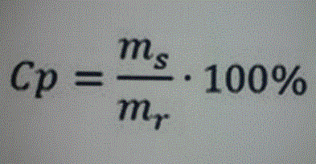

Klasa 7Ga
wychowawca Renata Szpekalukinformatyka
religa
w-f
edukacja dla bezpieczeństwa
Informatyka
Klasa 7GA
Temat: Komórka, adres, formuła
1. Obejrzyj filmik Kurs Excel 2007 Dla Początkujących Część 1
https://youtu.be/BWGl4inl90k
2. Stwórz w arkuszu kalkulacyjnym "Sklep Pani Staszki" dokładnie tak jak przedstawiono w filmiku.
3. Zapisz plik według wzoru klasa.imię np. 7a.Kuba
4. Wyślij plik na adres grzesiekgos@interia.pl
j.angielski
geografia/przyroda
technika
matematyka
Język angielski
Topic: I have got a brother Ja mam brata
Dla Bartka
Przypomnij sobie odmianę czasownika have got mieć
liczba pojedyncza: liczba mnoga:
I have got ja mam we have got my mamy
You have got ty masz you have got wy macie
He has got on ma they have got oni/one mają
She has got ona ma
It has got ono ma
Zadanie 1. Przetłumacz zdania na język polski. Powtórz wyrazy związane z rodziną i zwierzętami.
I have got a sister. ...............................
She has got a brother................................
He has got two uncles................................
You have got four aunts................................
We have got a parrot................................
They have got five rabbits and a dog................................
Zadanie 2. Przetłumacz zdania na język angielski.
Ja mam psa. ...............................................................................
My mamy dwa koty. ................................................................................
Ona ma czterech braci. ...............................................................................
Oni mają troje dzieci. ..................................................................................
Zadanie 3. Odpowiedz na pytania.
How many sisters have you got? I...............................
Have you got a pet? ...............................
Klasa 7Ga
Topic: I have got a brother Ja mam brata
Dla Piotra
Przypomnij sobie odmianę czasownika have got mieć
liczba pojedyncza: liczba mnoga:
I have got ja mam we have got my mamy
You have got ty masz you have got wy macie
He has got on ma they have got oni/one mają
She has got ona ma
It has got ono ma
Zadanie 1. Połącz zdania w języku angielskim i polskim. Napisz litery A-E obok cyfr.
(nazwy członków rodziny po angielsku w ZESZYCIE)
1) I have got a sister. A) My mamy dwa koty.
2) She has got a brother B) Ja mam siostrę.
3) He has got three uncles. C) Ty masz cztery ciocie.
4) You have got four aunts. D) Ona ma brata.
5) We have got two cats. E) On ma trzech wujków.
1) ............... 2) ............. 3) ............... 4) .............. 5) ..............
Zadanie 2. Przetłumacz zdania na język angielski.
Ja mam psa. ...............................................................................
My mamy dwie babcie. ................................................................................
Ona ma czterech braci. ...............................................................................
Matematyka Elżbieta Jaskólska- KLASA 7GA
lekcja 105 02.04.2020r.
Temat: Sześcian i prostopadłościan. Pole sześcianu.
Możesz obejrzeć film o sześcianie na YouTube : Budowa prostopadłościanu i sześcianu #2 [ Figury przestrzenne - wprowadzenie ]
Poniższą notatkę przepisz lub wklej do zeszytu
Definicja sześcianu:
Sześcian to prostopadłościan zbudowany z 6 jednakowych kwadratów.
Pole powierzchni całkowitej sześcianu obliczamy ze wzoru:
Pc=6ˇa2
Sześcian składa się z 6 jednakowych kwadratów stąd otrzymaliśmy powyższy wzór.
Przykład 1
Oblicz pole sześcianu o boku długości a = 3 cm.
Gdy znamy długość boku sześcianu to wystarczy, że podstawimy do wzoru:
Pc=6ˇa2 = 6ˇ (3cmˇ3cm) =6ˇ9cm2=54cm2
Pole sześcianu wynosi 54 cm2.
Zadanie 1
Uzupełnij luki w zadaniach.
Sześcian składa się z....... ścian.
Sześcian ma......wierzchołków.
Sześcian ma ......krawędzi.
Zadanie 2
Oblicz pole sześcianu o boku długości a = 3,5 cm.
(Możesz użyć kalkulatora, ale najpierw spróbuj obliczyć stosując mnożenie sposobem pisemnym)
GEOGRAFIA-KLASA 7GA
Temat: Turystyka. Regiony turystyczne Polski.
Przepisz notatkę do zeszytu:
Turystyka obejmuje różne formy spędzania czasu wolnego poza domem. W zależności od wyjazdu turystykę dzielimy na:
- wypoczynkową
- religijną
- biznesową
- poznawczą
- leczniczą
Walory turystyczne Polski:
a) Przyrodnicze ( to m.in. urozmaicona rzeźba terenu, jeziora, rzeki)
Obejrzyj film:
https://www.youtube.com/watch?v=ZLR0B6O6cmc
b) Kulturowe ( liczne zabytki, muzea )
Na liście UNESCO jest obecnie 15 polskich zabytków m.in. Stare Miasto w Krakowie, Królewskie Kopalnie Soli w Wieliczce i Bochni, Zamek krzyżacki w Malborku
Obejrzyj film:
https://www.youtube.com/watch?v=GEHHW6JoRM4
c) Ciekawe miejsca
https://www.youtube.com/watch?v=I3w9m4mGk2Y
Napisz, co ciekawego jest w regionie, w którym mieszkasz?
TECHNIKA-KLASA 7GA
https://www.youtube.com/watch?v=ETfv7Ml15x0
Obejrzyj pierwsze 2 minuty i 40 sekund filmu, zapamiętaj właściwości fizyczne metali, ta wiedza będzie nam potrzebna na zajęciach praktycznych w pracowni techniki
chemia
muzyka
WOS
j.polski
J.polski kl 7Ga
Temat: K. Wierzyński o radości życia- wiersz Na łące. Przymiotniki.
1. Przeczytaj podany wiersz: ( Bartek )
Leżę na łące,
Nikogo nie ma : ja i słońce
Ciszą nabrzmiałą i wezbraną
Napływa myśl:
- To pachnie siano.
Wiatr ciągnie po trawach z szelestem,
A u góry
Siostry moje, białe chmury,
Wędrują na wschód.
2. Wypisz z wiersza przymiotniki.
3. Uzupełnij zdania z podanymi wyrazami i przepisz tekst do zeszytu. ( Bartek, Piotr)
ciepło, trawa, lodu, śniegu, krokusy, bociany, bazie, słońce
Jest już wiosna. Na dworze jest............. Świeci..................... Nie ma już................
i .....................Na łące rośnie zielona ................ Nad łąką latają ..................... Na wierzbie
są ...............W ogródku kwitną................
Dodatkowo Bartek:
Uzupełnij zdania podanymi przymiotnikami: ( przepisz do zeszytu )
1. Nadeszła................wiosna.
2. .......................przyroda budzi się do życia.
3. Ludzie zdjęli.................ubrania.
4. Na gałązkach pojawiają się ................ pąki.
5. Pokazały się już.................
6. Powróciła też .....................jaskółeczka.
7. Niedługo przybędzie.................. Bocian.
8. Wśród trawy widać ...................krokusy.
9. Po podwórku biegają........................dzieci.
10. Cały świat zrobił się .................. i .....................
Przymiotniki:
upragniona, ciepły, bogate uśpiona, ciężka, puszysta, zimowe, zielone, czerwonym, leciutkie, rozszarpany, czarna, głodni, długonogi, kolorowe, zmęczonymi, roześmiane, nadmuchane, wesoły
1.04-Klasa 7GA - Chemia
Temat: Stężenie procentowe roztworu
Zapisz w zeszycie definicję
Stężenie procentowe roztworu (cp) to liczba gramów substancji rozpuszczonej w 100 g roztworu.
gdzie ms-masa substancji rozpuszczonej
mr-masa roztworu
Wodny roztwór soli kuchennej jest 7% to znaczy, że w 100 g roztworu znajduje się 7 g soli kuchennej.
Zadanie 1.
Oblicz jakie będzie stężenie procentowe roztworu jeżeli ms=25 g a mr-ru=100 g. Podstaw do wzoru i oblicz.

Muzyka- KLASA 7G
Temat : Poezja śpiewana w piosence pt.,, Piosenka wiosenna
1. Posłuchaj piosenki i zastanów się o czym opowiada piosenka , na jakim instrumencie grany jest akompaniament do piosenki
2. Prezentacja piosenki
https://www.youtube.com/watch?v=gxCHicu
,, Piosenka wiosenna"
I Zagram dla Ciebie na każdej gitarze świata,
na ulic fletach, na nitkach babiego lata.
Wyśpiewam, jak potrafię, księżyce na rozstajach
i wrześnie, i stycznie, i maje,
i zagubione dźwięki, i barwy na płótnach Vlamincka,
i słońce wędrujące promienia ścieżynką.
Ref. Graj nam graj, pieśń skrzydlata,
wiosna taniec nasz niesie po łąkach,
zatańczymy się w sobie do lata,
zatańczymy się w siebie bez końca.
3. Zaśpiewaj z rodzicami I zwrotkę i refren piosenki.
4. Napisz w zeszycie temat lekcji ,notatkę i narysuj instrument na którym grany jest akompaniament do piosenki.
5. Notatka;
Maurice de Vlaminck ( czytaj: Moris de Wlamęk), 1876-1958- malarz francuski, jego obrazy charakteryzują się śmiałymi, intensywnymi kolorami
Obszar załączników
Podgląd filmu YouTube Wolna Grupa Bukowina - Piosenka Wiosenna
matematyka
fizyka
plastyka
PLASTYKA
Wiosna moich marzeń.
Wykonaj przy pomocy kredek pastelowych pracę plastyczną o tematyce wiosennej.
FIZYKA
Temat : Siły w przyrodzie. Siła oporu powietrza.
zapisz do zeszytu:
Powietrze, które nas otacza, powoduje opór dla ciał, które spadają i które się w nim poruszają. Im większa jest prędkość ciała tym większy jest opór powietrza. Opór powietrza zależy także od kształtu ciała.
zad
Obejrzyj film https://www.youtube.com/watch?v=axGnQ0D6ycs
Wykonaj doświadczenie z filmiku z wykorzystaniem dłoni i wody.
Zastanów się czy opór w wodzie występuje tak samo jak w powietrzu?
MATEMATYKA
Temat: Siatki graniastosłupów.
Wpisz na wyszukiwarce: youtube Siatki prostopadłościanów - Matematyka Szkoła Podstawowa. Obejrzyj film. Wykonaj w zeszycie poniższe zadania.
Wykonaj w zeszycie poniższe zadania.


Ćwiczenia relaksacyjne i wspomagające pracę mózgu
(uzupełnienie terapii EEGBiofeedback)
III. ( TYLKO DLA PIOTRKA! )
Ćwiczenia przed przystąpieniem do pracy.
Obie ręce wyciągamy do przodu. Lewą rękę kładziemy na prawej. Teraz zmiana, prawą rękę kładziemy na lewej.
Dotykamy ręką lewą prawego łokcia, następnie ucha, potem kolana .
Dotykamy ręką prawą lewego łokcia, następnie ucha, potem kolana .
Lewą ręką dotykamy prawego ucha , nie puszczany. Prawą dotykamy lewego ucha. Ciągniemy się za uszy.
5. Lewą ręką wkładamy do prawej kieszeni, potem prawą ręką do lewej kieszeni.
DLA CHĘTNYCH
Lewą ręką wyciągniętą do przodu rysujemy w powietrzu dużą, leżącą ?.
Prawą ręką wyciągniętą do przodu rysujemy w powietrzu dużą, leżącą ?
Ćwiczenia w przerwach
Przeciągamy ręce jak człowiek, który rano wstaje.
Wciągamy powietrze nosem i wypuszczamy ustami.
II.
(proszę Rodziców o współpracę, pomoc w czytaniu poleceń . Można też ćwiczyć z dzieckiem )
Ćwiczenia przed przystąpieniem do pracy.
Obie ręce wyciągnięte przed siebie, krzyżujemy ręce tak, by, lewa ręka leżała na prawej, następnie prawa na lewej (3 powtórzenia).
Dotykamy ręką praw ą lewego łokcia, następnie ucha, potem kolana.
Dotykamy ręką lewą prawego łokcia, następnie ucha, potem kolana.
Rysujemy kółka nosem w powietrzu. Najpierw małe potem, coraz większe.
Lewą ręką sięgamy do prawej kieszeni, potem prawą ręką sięgamy do lewej kieszeni.
Jedną rękę kładziemy na karku a drugą klepiemy się po brzuchu.
Ćwiczenia w przerwach
Przeciągamy ręce jak człowiek, który rano wstaje.
Nabieramy powietrza do buzi i robimy z policzków balon. Mocno naciskamy palcami na policzki, żeby powietrze wystrzeliło.
Zamykamy oczy. Trzymamy zamknięte, otwieramy bardzo szeroko.
Zaciskamy pięści, trzymamy, prostujemy palce.
Tupiemy mocno nogami.
Paczka zabawa ze starszym rodzeństwem lub kuzynem. Dziecko kuca i silnie obejmuje rękami kolana. Druga osoba stara się otworzyć paczkę poprzez odciągnięcie rąk.
Kwiatek- zabawa w pojedynkę, dziecko kuca i obejmuje rękami kolana następnie prostuje ręce , wstaje i przeciąga się.
(Proszę Państwa o współpracę , dziecko naśladuje ruchy Rodzica, lub kierujemy jego rękami).
Budzimy głowę- dziecko dotyka głowy obiema rękami.
Budzimy czoło (dziecko dotyka otwartą dłonią czoła)
Budzimy uszy- dziecko dotyka uszu, następnie zasłaniamy mu uszy dłońmi i po chwili odsłaniamy (dwa razy). W czasie zasłaniania uszu możemy powiedzieć jest cicho, a po odsłonięciu jest głośno.
Budzimy nos- dziecko dotyka nosa. Po tym ćwiczeniu można dać dziecku coś miłego do powąchania.
Budzimy oczy dziecko delikatnie dotyka palcami oczu, następnie mówimy zamknij oczy, a po chwili otwórz i zrób wielkie, straszne oczy.
Budzimy buzię- dziecko klepie się w policzki. Po tym ćwiczeniu dziecko może zdmuchnąć świeczkę.
Budzimy język- dziecko wystawia język. Po tym ćwiczeniu można dać dziecku coś miłego do polizania.
Budzimy brzuch- dziecko klepie się po brzuchu.
I pupę- dziecko sięga rękami do pośladków.
Budzimy ręce- dziecko klaszcze w dłonie.
Budzimy nogi- dziecko mocno tupie, im głośniej tym lepiej
język polski
historia
biologia
JĘZYK POLSKI
Temat: Charakterystyka bohaterów lektury Latarnik
Przepisz do zeszytu charakterystykę bohaterów.
ˇ Skawiński główny bohater utworu, mężczyzna siedemdziesięcioletni, objął posadę latarnika w Aspinwall. Pragnął odpoczynku, spokoju. Jego życie było bardzo burzliwe. Brał udział w różnych powstaniach i wojnach. Lubił swoją pracę, sumiennie wykonywał obowiązki latarnika. Kontakt z naturą sprawiał, że czuł się szczęśliwy.
ˇ Johns strażnik portowy, przynosi Skawińskiemu wiadomość o zatonięciu łodzi
i utracie posady.
ˇ Mr Izaak- konsul Stanów Zjednoczonych w Panamie, przyjmuje do pracy Skawińskiego.
HISTORIA
Temat: Odzyskanie niepodległości przez Polskę.
Zapisz w zeszycie dużymi literami i na kolorowo. Zapamiętaj tę datę.
11 listopada 1918 roku Polska odzyskała niepodległość
Narodowe Święto Niepodległości to najważniejsze polskie święto narodowe. Przez 123 lata niewoli zaborczej Polacy próbowali na przeróżne sposoby odzyskać niepodległość i czekali latami na dogodny moment aż w 1918 r.marszałek Piłsudski poinformował o powstaniu niepodległego państwa polskiego.
Obejrzyj film:
https://www.youtube.com/watch?v=Z4GdAYXfTGA
BIOLOGIA
Podręcznik z biologii Puls Życia kl. 7 dostępny na stronie - https://www.nowaera.pl/naukazdalna
Temat : Higiena i choroby układu wydalniczego.
Podręcznik str. 157 - przeczytać tekst.
Wykonaj zadania w zeszycie :
zad 1. Wypisz jak należy dbać o układ wydalniczy aby zapobiegać chorobą tego układu.
(str. 157)
zad. 2 Wymień znane ci choroby układu wydalniczego.
( Zapoznaj się z ich przyczynami, objawami i sposobem leczenia - str. 158-159)
Dla Bartka materiały dodatkowe do poczytania:
https://epodreczniki.pl/a/profilaktyka-chorob-ukl /D13TqDQKN